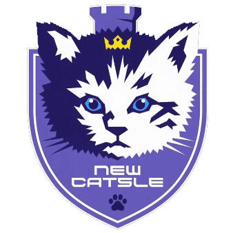

MATCH REVIEW JOURNAL
이아깽의 스폰일지
Google 시트에서 옮긴 실제 경기 기록을 Neon 데이터베이스에서 불러왔습니다.
Neon 실제 데이터
관리자 작성 가능
경기 기록
기록을 불러오는 중입니다.
| 날짜 | 경기 | 상대 | 티어 | 종족 | 맵 | 전적 | 상대빌드 | 내 빌드 | 피드백 | 느낀점 |
|---|---|---|---|---|---|---|---|---|---|---|
| 스폰일지를 불러오고 있습니다. | ||||||||||
1 / 1